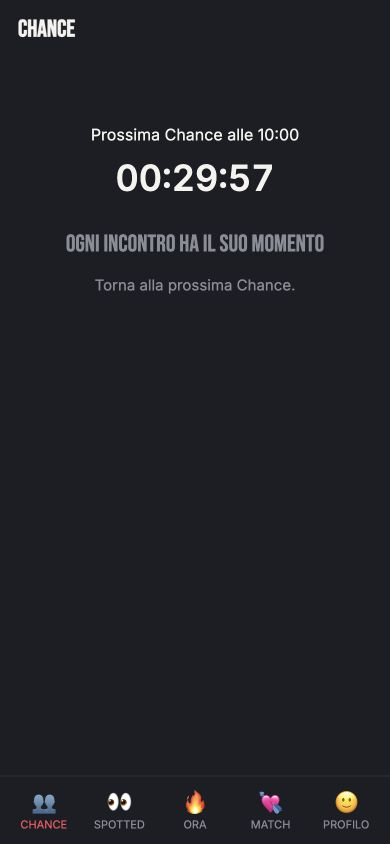
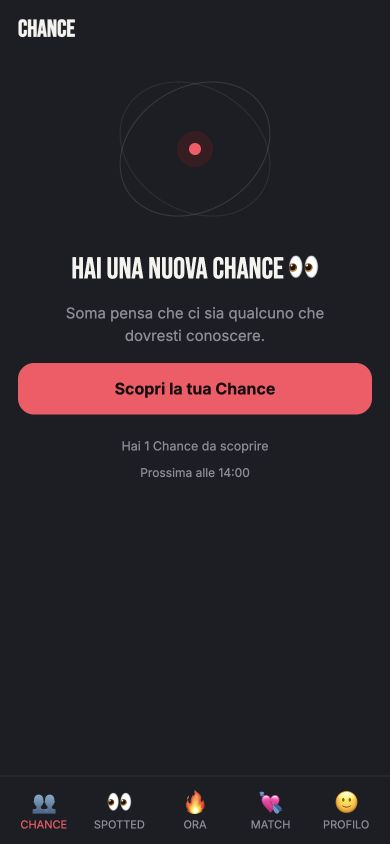
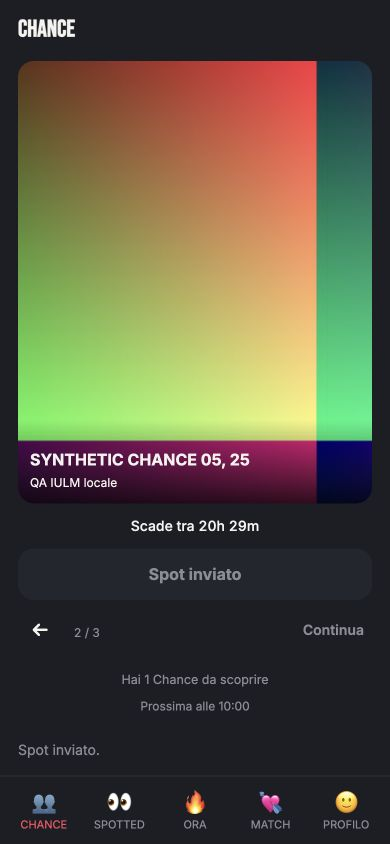
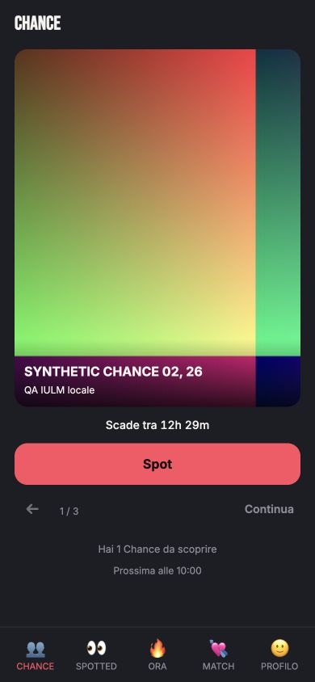
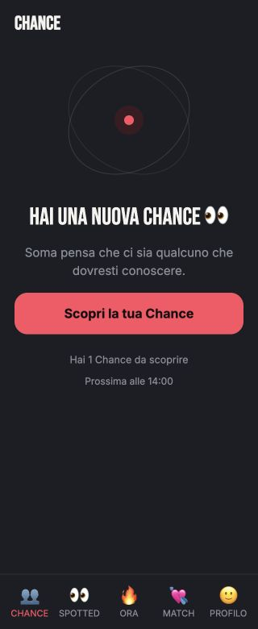
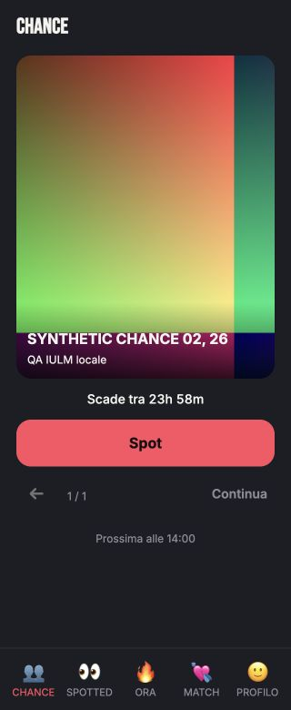
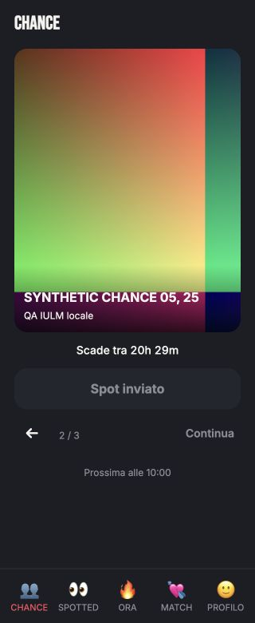
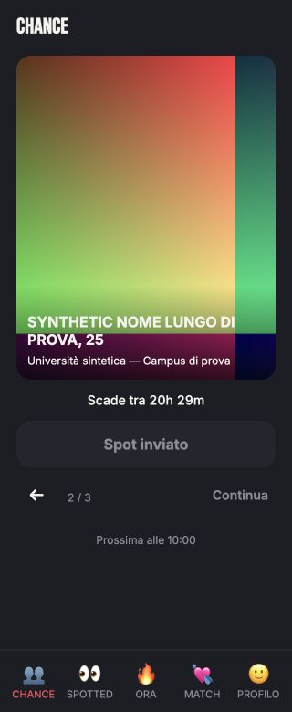
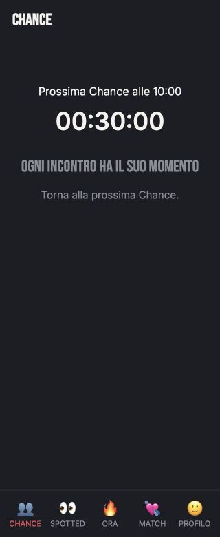

App reale + RPC/PostgREST locali reali. Account e contesto Auth sintetici isolati; nessuna attivazione staging. La foto multicolore è un asset tecnico QA, non una nuova grafica SOMA. L’elemento astratto prima del reveal è invece la UI reale implementata in CSS.
390×844 e 320×780. Nessuna copia di branding Breakfast; sistema visivo SOMA preservato.
Gerarchia: Il prossimo rilascio e il countdown reale sono il punto focale.
Cambiato: Timer promosso solo a inventario vuoto.
Rimandato: Animazioni e art direction globali.

Gerarchia: Elemento astratto, messaggio e una sola CTA.
Cambiato: Niente Precedente/Continua; il prossimo rilascio è una nota.
Rimandato: Motion/illustrazioni più elaborate.

Gerarchia: L’introduzione resta primaria; il numero resta secondario.
Cambiato: Solo conteggio, zero foto/preview prima del reveal.
Rimandato: Nessuna gallery prevista.
Gerarchia: Persona, scadenza e Spot.
Cambiato: Foto più alta, scadenza vicina; prossimo rilascio senza countdown concorrente.
Rimandato: Art direction delle foto; immagine qui tecnica QA.
Gerarchia: La persona mantiene priorità anche con altre Chance.
Cambiato: Conteggio e prossimo orario sotto le azioni.
Rimandato: Revisione globale della scala tipografica.
Gerarchia: Esito chiaro sul pulsante disabilitato.
Cambiato: Spot rimane primario rispetto al Continua leggero.
Rimandato: Feedback/motion globali.

Gerarchia: Una persona ancora valida.
Cambiato: Freccia piccola, indice discreto, nessun carosello.
Rimandato: Iconografia globale.

Gerarchia: Stesso rituale e una sola CTA.
Cambiato: Hero e testo dentro il viewport, nessun controllo anticipato.
Rimandato: Safe-area su dispositivo fisico.

Gerarchia: Persona e scadenza senza rumore attorno.
Cambiato: Spot e Continua entrambi raggiungibili sopra la bottom nav.
Rimandato: Device QA fisico.

Gerarchia: Spot inviato persiste al revisit.
Cambiato: Nessun reset ottimistico dello stato.
Rimandato: Auth reale non ricertificato qui.

Gerarchia: Nome e Tribe restano leggibili.
Cambiato: Wrapping senza clipping o overflow.
Rimandato: Copywriting globale.

Gerarchia: Il countdown diventa di nuovo il protagonista.
Cambiato: Zero profili e controlli seriali dopo expiry.
Rimandato: Animazioni globali.
